Chapter 7. Gaussian Processes#
import os
import warnings
import arviz as az
import matplotlib.pyplot as plt
import numpy as np
import pandas as pd
import scipy
from scipy.special import expit as logistic
import jax
import jax.numpy as jnp
import jax.scipy.linalg
from jax import random, vmap, local_device_count
import numpyro
import numpyro.distributions as dist
from numpyro.infer import MCMC, NUTS
seed=1234
if "SVG" in os.environ:
%config InlineBackend.figure_formats = ["svg"]
warnings.formatwarning = lambda message, category, *args, **kwargs: "{}: {}\n".format(
category.__name__, message
)
az.style.use("arviz-darkgrid")
numpyro.set_platform("cpu") # or "gpu", "tpu" depending on system
numpyro.set_host_device_count(local_device_count())
# Enable 64-bit precision. GP covariance matrices on data with duplicate or
# near-duplicate inputs (e.g. the iris sepal_length feature) are rank-deficient,
# and in float32 the small diagonal jitter is too small for jnp.linalg.cholesky
# to stay finite. float64 makes the Cholesky factorisation numerically stable so
# the inference is driven by the data rather than by NaN rejection.
numpyro.enable_x64()
/home/runner/work/bap-numpyro/bap-numpyro/.venv/lib/python3.13/site-packages/tqdm/auto.py:21: TqdmWarning: IProgress not found. Please update jupyter and ipywidgets. See https://ipywidgets.readthedocs.io/en/stable/user_install.html
from .autonotebook import tqdm as notebook_tqdm
Modeling functions#
x = jnp.linspace(0, 1, 10)
y = dist.Normal(0, 1).sample(random.PRNGKey(0), (len(x),))
# y = np.random.normal(0, 1, len(x))
plt.plot(x, y, 'o-', label='the first one')
y = jnp.zeros_like(x)
for i in range(len(x)):
# x[idx] = y``, use ``x = x.at[idx].set(y)
y = y.at[i].set(dist.Normal(y[i-1], 1).sample(random.PRNGKey(i*i)))
# y[i] = dist.Normal(y[i-1], 1)
plt.plot(x, y, 'o-', label='the second one')
plt.legend()
<matplotlib.legend.Legend at 0x7fe598587cb0>
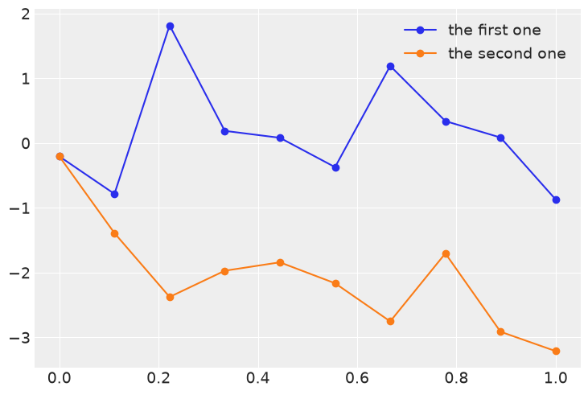
Covariance functions and kernels#
def exp_quad_kernel(x, knots, ℓ=1):
"""exponentiated quadratic kernel"""
return jnp.array([jnp.exp(-(x-k)**2 / (2*ℓ**2)) for k in knots])
def stable_cov(K, jitter=1e-6):
"""Symmetrise and add jitter so K is safely positive definite."""
K = 0.5 * (K + K.T)
return K + jitter * jnp.eye(K.shape[0])
# def linear_kernel(x, knots):
# """ linear kernel """
# return np.array([(x - 2) * (k - 2) for k in knots])
data = jnp.array([-1, 0, 1, 2]) # np.random.normal(size=4)
cov = exp_quad_kernel(data, data, 1)
_, ax = plt.subplots(1, 2, figsize=(12, 5))
ax = list(ax.flat)
ax[0].plot(data, jnp.zeros_like(data), 'ko')
ax[0].set_yticks([])
for idx, i in enumerate(data):
ax[0].text(i, 0+0.005, idx)
ax[0].set_xticks(data)
ax[0].set_xticklabels(jnp.round(data, 2))
#ax[0].set_xticklabels(np.round(data, 2), rotation=70)
ax[1].grid(False)
im = ax[1].imshow(cov)
colors = ['w', 'k']
for i in range(len(cov)):
for j in range(len(cov)):
ax[1].text(j, i, round(cov[i, j], 2),
color=colors[int(im.norm(cov[i, j]) > 0.5)],
ha='center', va='center', fontdict={'size': 16})
ax[1].set_xticks(range(len(data)))
ax[1].set_yticks(range(len(data)))
ax[1].xaxis.tick_top()
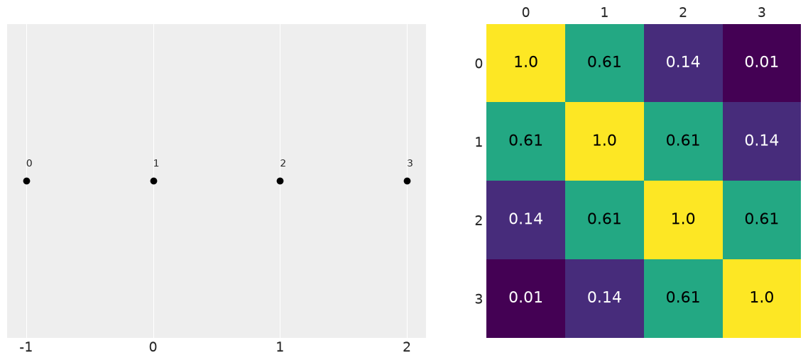
cov
Array([[1. , 0.60653066, 0.13533528, 0.011109 ],
[0.60653066, 1. , 0.60653066, 0.13533528],
[0.13533528, 0.60653066, 1. , 0.60653066],
[0.011109 , 0.13533528, 0.60653066, 1. ]], dtype=float64)
np.linalg.cholesky(np.asarray(cov))
array([[1. , 0. , 0. , 0. ],
[0.60653066, 0.7950601 , 0. , 0. ],
[0.13533528, 0.65963021, 0.73930531, 0. ],
[0.011109 , 0.16174543, 0.67405853, 0.72066643]])
scipy.stats.multivariate_normal.rvs(cov=np.asarray(cov), size=2).T
array([[ 0.97966623, -1.04161337],
[ 1.99219559, -0.83357301],
[ 0.78748203, -0.29634335],
[ 1.09170721, 0.29061205]])
dist.MultivariateNormal(covariance_matrix=cov).sample(random.PRNGKey(0), (2,))
Array([[-0.20584214, -0.74878552, 0.7971296 , 1.23030261],
[ 0.08086788, -0.24680159, 0.64538312, 0.98699928]], dtype=float64)
test_points = jnp.linspace(0, 10, 200)
jnp.zeros(test_points.shape[0]).shape
(200,)
test_points = jnp.linspace(0, 10, 200)
fig, ax = plt.subplots(2, 2, figsize=(12, 6), sharex=True,
sharey=True, constrained_layout=True)
ax = list(ax.flat)
for idx, ℓ in enumerate((0.2, 1, 2, 10)):
cov = stable_cov(exp_quad_kernel(test_points, test_points, ℓ), jitter=1e-5)
ax[idx].plot(test_points, dist.MultivariateNormal(loc=jnp.zeros(test_points.shape[0]), covariance_matrix=cov).sample(random.PRNGKey(0), (2,)).T)
ax[idx].set_title(f'ℓ ={ℓ}')
fig.text(0.51, -0.03, 'x', fontsize=16)
fig.text(-0.03, 0.5, 'f(x)', fontsize=16)
Text(-0.03, 0.5, 'f(x)')
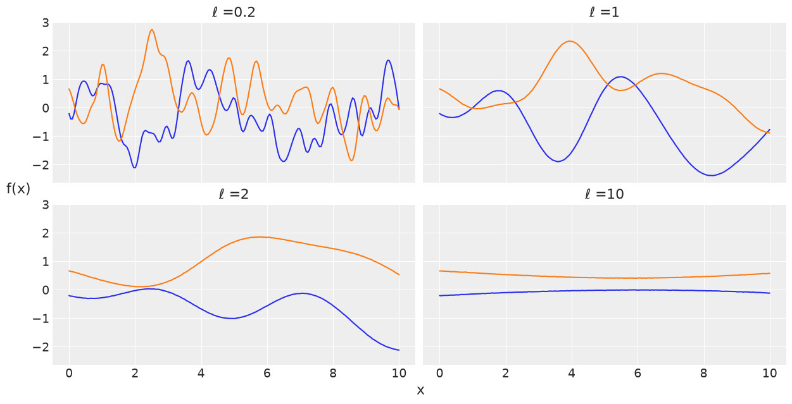
Gaussian Process regression#
# np.random.seed(42)
x = dist.Uniform(low=0, high=10).sample(random.PRNGKey(1), (15,))
y = dist.Normal(loc=jnp.sin(x), scale=0.1).sample(random.PRNGKey(2))
plt.plot(x, y, 'o')
true_x = jnp.linspace(0, 10, 200)
plt.plot(true_x, jnp.sin(true_x), 'k--')
plt.xlabel('x')
plt.ylabel('f(x)', rotation=0)
Text(0, 0.5, 'f(x)')
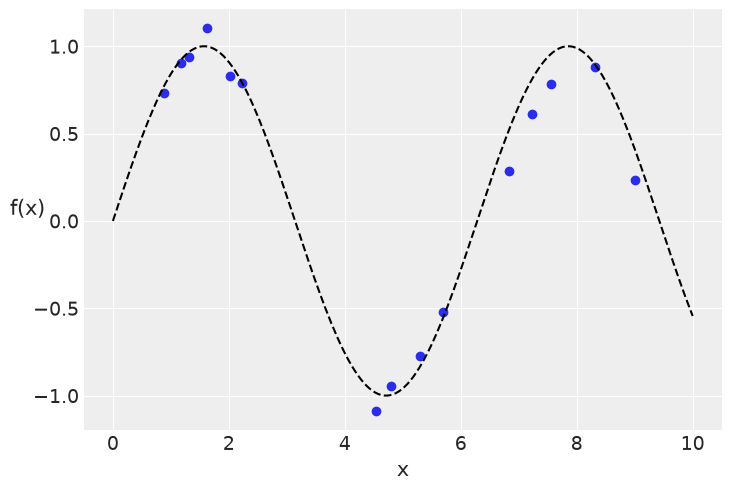
# A one dimensional column vector of inputs.
X = x[:, None]
# Shared GP machinery (reused by every model below)
def expquad(X, Z, eta=1.0, ls=1.0, jitter=1.0e-6, include_jitter=True):
"""Exponentiated-quadratic (RBF) kernel. X:(n,d), Z:(m,d) -> (n,m)."""
X = X[:, None] if X.ndim == 1 else X
Z = Z[:, None] if Z.ndim == 1 else Z
d2 = (
jnp.sum(X**2, 1)[:, None]
+ jnp.sum(Z**2, 1)[None, :]
- 2.0 * X @ Z.T
)
k = eta**2 * jnp.exp(-0.5 * d2 / ls**2)
if include_jitter and X.shape[0] == Z.shape[0]:
k = k + jitter * jnp.eye(X.shape[0])
return k
def linear_kernel(X, Z, c=0.0):
"""Linear kernel (X - c)(Z - c)^T."""
X = X[:, None] if X.ndim == 1 else X
Z = Z[:, None] if Z.ndim == 1 else Z
return (X - c) @ (Z - c).T
def sample_latent_gp(name, K):
"""Non-centred latent GP draw: f = L @ eta, eta ~ Normal(0, 1).
K must already include a jitter/white-noise term on its diagonal so the
Cholesky factorisation is stable.
"""
n = K.shape[0]
L = jnp.linalg.cholesky(K)
eta = numpyro.sample(f"{name}_eta", dist.Normal(0.0, 1.0).expand([n]))
return numpyro.deterministic(name, L @ eta)
def model_reg(X, y=None):
# hyperprior for the lengthscale kernel parameter
ls = numpyro.sample("ℓ", dist.Gamma(concentration=2, rate=0.5))
# observation noise
eps = numpyro.sample("ϵ", dist.HalfNormal(25))
# marginal GP likelihood: y ~ MVN(0, K_xx + eps^2 I)
n = X.shape[0]
K = expquad(X, X, eta=1.0, ls=ls) + eps**2 * jnp.eye(n)
numpyro.sample(
"y_pred",
dist.MultivariateNormal(loc=jnp.zeros(n), covariance_matrix=K),
obs=y,
)
kernel_reg = NUTS(model_reg, target_accept_prob=0.9)
mcmc_reg = MCMC(
kernel_reg,
num_warmup=1000,
num_samples=1000,
num_chains=2,
chain_method="sequential",
progress_bar=False,
)
mcmc_reg.run(random.PRNGKey(seed), X=X, y=y)
trace_reg = az.from_numpyro(mcmc_reg)
az.plot_trace(trace_reg, var_names=["ℓ", "ϵ"])
plt.savefig('B11197_07_05.png')
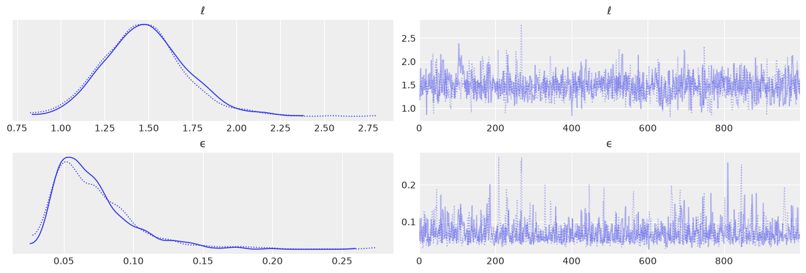
X_new = np.linspace(np.floor(np.asarray(x).min()), np.ceil(np.asarray(x).max()), 100)[:, None]
X_new_j = jnp.asarray(X_new)
def gp_conditional(rng_key, X, y, X_new, ls, eps, pred_jitter=1e-4):
"""Closed-form GP posterior predictive of f at X_new for the marginal model.
Returns a sample of f* | y drawn from the conditional Gaussian. A small
pred_jitter is added to the predictive covariance to keep it positive
definite on a dense grid.
"""
n = X.shape[0]
m = X_new.shape[0]
K = expquad(X, X, ls=ls) + eps**2 * jnp.eye(n)
K_s = expquad(X, X_new, ls=ls, include_jitter=False)
K_ss = expquad(X_new, X_new, ls=ls)
L = jnp.linalg.cholesky(K)
alpha = jax.scipy.linalg.cho_solve((L, True), y)
mu = K_s.T @ alpha
v = jax.scipy.linalg.solve_triangular(L, K_s, lower=True)
cov = K_ss - v.T @ v
cov = 0.5 * (cov + cov.T) + pred_jitter * jnp.eye(m)
return dist.MultivariateNormal(loc=mu, covariance_matrix=cov).sample(rng_key)
post_reg = mcmc_reg.get_samples()
# thin to 82 draws to mirror the book's sample_posterior_predictive(samples=82)
n_pred = 82
ls_draws = post_reg["ℓ"][:n_pred]
eps_draws = post_reg["ϵ"][:n_pred]
keys = random.split(random.PRNGKey(seed + 1), n_pred)
f_pred = vmap(
lambda k, ls, eps: gp_conditional(k, X, y, X_new_j, ls, eps)
)(keys, ls_draws, eps_draws)
f_pred = np.asarray(f_pred)
f_pred.shape
(82, 100)
_, ax = plt.subplots(figsize=(12,5))
ax.plot(X_new, f_pred.T, 'C1-', alpha=0.3)
ax.plot(np.asarray(X), np.asarray(y), 'ko')
ax.set_xlabel('X')
plt.savefig('B11197_07_06.png')
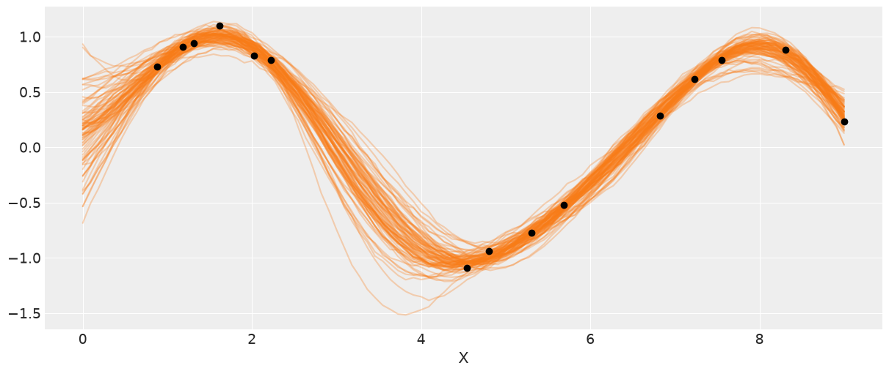
_, ax = plt.subplots(figsize=(12,5))
az.plot_hdi(X_new[:, 0], f_pred, color='C1', smooth=False, ax=ax)
ax.plot(X_new[:, 0], f_pred.mean(0), 'C1', lw=2)
ax.plot(np.asarray(X), np.asarray(y), 'ko')
ax.set_xlabel('x')
ax.set_ylabel('f(x)', rotation=0, labelpad=15)
plt.savefig('B11197_07_07.png')
FutureWarning: hdi currently interprets 2d data as (draw, shape) but this will change in a future release to (chain, draw) for coherence with other functions
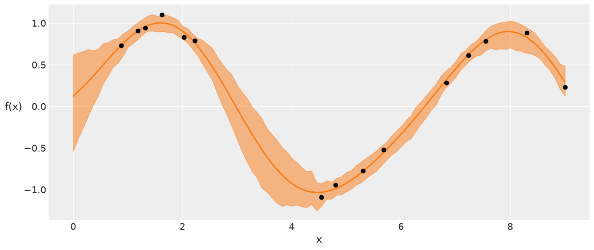
# plot the results
_, ax = plt.subplots(figsize=(12,5))
# predict at the posterior-mean hyperparameters (diagonal predictive variance)
ls_hat = post_reg["ℓ"].mean()
eps_hat = post_reg["ϵ"].mean()
n = X.shape[0]
K = expquad(X, X, ls=ls_hat) + eps_hat**2 * jnp.eye(n)
K_s = expquad(X, X_new_j, ls=ls_hat, include_jitter=False)
K_ss = expquad(X_new_j, X_new_j, ls=ls_hat)
L = jnp.linalg.cholesky(K)
alpha = jax.scipy.linalg.cho_solve((L, True), y)
mu = np.asarray(K_s.T @ alpha)
v = jax.scipy.linalg.solve_triangular(L, K_s, lower=True)
var = np.asarray(jnp.diag(K_ss) - jnp.sum(v**2, 0))
sd = var**0.5
# plot mean and 1σ and 2σ intervals
ax.plot(X_new, mu, 'C1')
ax.fill_between(X_new.flatten(), mu - sd, mu + sd, color="C1", alpha=0.3)
ax.fill_between(X_new.flatten(), mu - 2*sd, mu + 2*sd, color="C1", alpha=0.3)
ax.plot(np.asarray(X), np.asarray(y), 'ko')
ax.set_xlabel('X')
plt.savefig('B11197_07_08.png')
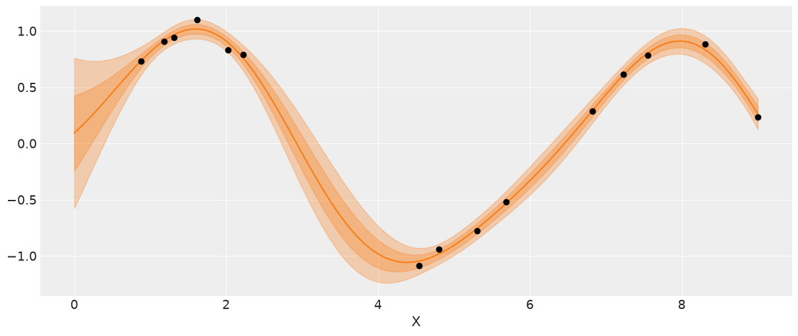
Regression with spatial autocorrelation#
islands_dist = pd.read_csv('../data/islands_dist.csv',
sep=',', index_col=0)
islands_dist.round(1)
| Ml | Ti | SC | Ya | Fi | Tr | Ch | Mn | To | Ha | |
|---|---|---|---|---|---|---|---|---|---|---|
| Malekula | 0.0 | 0.5 | 0.6 | 4.4 | 1.2 | 2.0 | 3.2 | 2.8 | 1.9 | 5.7 |
| Tikopia | 0.5 | 0.0 | 0.3 | 4.2 | 1.2 | 2.0 | 2.9 | 2.7 | 2.0 | 5.3 |
| Santa Cruz | 0.6 | 0.3 | 0.0 | 3.9 | 1.6 | 1.7 | 2.6 | 2.4 | 2.3 | 5.4 |
| Yap | 4.4 | 4.2 | 3.9 | 0.0 | 5.4 | 2.5 | 1.6 | 1.6 | 6.1 | 7.2 |
| Lau Fiji | 1.2 | 1.2 | 1.6 | 5.4 | 0.0 | 3.2 | 4.0 | 3.9 | 0.8 | 4.9 |
| Trobriand | 2.0 | 2.0 | 1.7 | 2.5 | 3.2 | 0.0 | 1.8 | 0.8 | 3.9 | 6.7 |
| Chuuk | 3.2 | 2.9 | 2.6 | 1.6 | 4.0 | 1.8 | 0.0 | 1.2 | 4.8 | 5.8 |
| Manus | 2.8 | 2.7 | 2.4 | 1.6 | 3.9 | 0.8 | 1.2 | 0.0 | 4.6 | 6.7 |
| Tonga | 1.9 | 2.0 | 2.3 | 6.1 | 0.8 | 3.9 | 4.8 | 4.6 | 0.0 | 5.0 |
| Hawaii | 5.7 | 5.3 | 5.4 | 7.2 | 4.9 | 6.7 | 5.8 | 6.7 | 5.0 | 0.0 |
islands = pd.read_csv('../data/islands.csv', sep=',')
islands.head().round(1)
| culture | population | contact | total_tools | mean_TU | lat | lon | lon2 | logpop | |
|---|---|---|---|---|---|---|---|---|---|
| 0 | Malekula | 1100 | low | 13 | 3.2 | -16.3 | 167.5 | -12.5 | 7.0 |
| 1 | Tikopia | 1500 | low | 22 | 4.7 | -12.3 | 168.8 | -11.2 | 7.3 |
| 2 | Santa Cruz | 3600 | low | 24 | 4.0 | -10.7 | 166.0 | -14.0 | 8.2 |
| 3 | Yap | 4791 | high | 43 | 5.0 | 9.5 | 138.1 | -41.9 | 8.5 |
| 4 | Lau Fiji | 7400 | high | 33 | 5.0 | -17.7 | 178.1 | -1.9 | 8.9 |
islands_dist_sqr = islands_dist.values**2
culture_labels = islands.culture.values
index = islands.index.values
log_pop = islands.logpop
total_tools = islands.total_tools
x_data = [islands.lat.values[:, None], islands.lon.values[:, None]]
dist_sqr = jnp.asarray(islands_dist_sqr)
log_pop_j = jnp.asarray(np.asarray(log_pop.values, dtype=float))
total_tools_j = jnp.asarray(np.asarray(total_tools.values, dtype=float))
index_j = jnp.asarray(np.asarray(index))
def model_islands(dist_sqr, log_pop, index, total_tools=None):
eta = numpyro.sample("η", dist.HalfCauchy(1))
ls = numpyro.sample("ℓ", dist.HalfCauchy(1))
# covariance built directly from the given squared-distance matrix
n = dist_sqr.shape[0]
K = eta**2 * jnp.exp(-0.5 * dist_sqr / ls**2) + 1e-6 * jnp.eye(n)
f = sample_latent_gp("f", K)
alpha = numpyro.sample("α", dist.Normal(0, 10))
beta = numpyro.sample("β", dist.Normal(0, 1))
mu = jnp.exp(alpha + f[index] + beta * log_pop)
numpyro.sample("tt_pred", dist.Poisson(mu), obs=total_tools)
kernel_islands = NUTS(model_islands, target_accept_prob=0.9)
mcmc_islands = MCMC(
kernel_islands,
num_warmup=1000,
num_samples=1000,
num_chains=2,
chain_method="sequential",
progress_bar=False,
)
mcmc_islands.run(
random.PRNGKey(seed),
dist_sqr=dist_sqr,
log_pop=log_pop_j,
index=index_j,
total_tools=total_tools_j,
)
trace_islands = mcmc_islands.get_samples()
az.summary(az.from_numpyro(mcmc_islands), var_names=['α', 'β', 'η', 'ℓ'])
| mean | sd | hdi_3% | hdi_97% | mcse_mean | mcse_sd | ess_bulk | ess_tail | r_hat | |
|---|---|---|---|---|---|---|---|---|---|
| α | 1.346 | 1.040 | -0.554 | 3.439 | 0.046 | 0.049 | 514.0 | 621.0 | 1.00 |
| β | 0.243 | 0.100 | 0.054 | 0.434 | 0.004 | 0.004 | 523.0 | 724.0 | 1.00 |
| η | 0.477 | 0.257 | 0.112 | 0.983 | 0.011 | 0.011 | 549.0 | 602.0 | 1.00 |
| ℓ | 1.493 | 0.874 | 0.009 | 3.012 | 0.044 | 0.022 | 362.0 | 454.0 | 1.01 |
trace_η = np.asarray(trace_islands['η'])
trace_ℓ = np.asarray(trace_islands['ℓ'])
_, ax = plt.subplots(1, 1, figsize=(8, 5))
xrange = np.linspace(0, islands_dist.values.max(), 100)
def cov_curve(eta, ls, d):
# matches the kernel used in model_islands: eta**2 * exp(-0.5 d^2 / ls^2)
return eta**2 * np.exp(-0.5 * d**2 / ls**2)
ax.plot(xrange, cov_curve(np.median(trace_η), np.median(trace_ℓ), xrange), lw=3)
ax.plot(
xrange,
cov_curve(trace_η[::20][:, None], trace_ℓ[::20][:, None], xrange).T,
'C0', alpha=.1,
)
ax.set_ylim(0, 1)
ax.set_xlabel('distance (thousand kilometers)')
ax.set_ylabel('covariance')
plt.savefig('B11197_07_09.png')
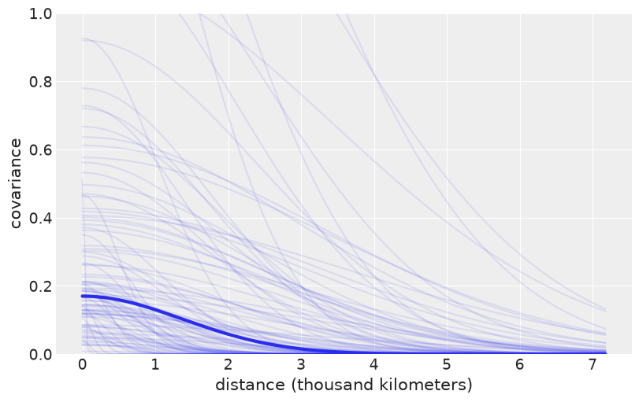
# compute posterior median covariance among societies
Σ = np.median(trace_η)**2 * np.exp(-0.5 * np.median(trace_ℓ)**-2 * islands_dist_sqr)
# convert to correlation matrix
Σ_post = np.diag(np.diag(Σ)**-0.5)
ρ = Σ_post @ Σ @ Σ_post
ρ = pd.DataFrame(ρ, index=islands_dist.columns, columns=islands_dist.columns)
ρ.round(2)
| Ml | Ti | SC | Ya | Fi | Tr | Ch | Mn | To | Ha | |
|---|---|---|---|---|---|---|---|---|---|---|
| Ml | 1.00 | 0.94 | 0.90 | 0.01 | 0.67 | 0.33 | 0.07 | 0.12 | 0.40 | 0.0 |
| Ti | 0.94 | 1.00 | 0.97 | 0.01 | 0.67 | 0.34 | 0.11 | 0.15 | 0.36 | 0.0 |
| SC | 0.90 | 0.97 | 1.00 | 0.02 | 0.53 | 0.46 | 0.17 | 0.23 | 0.25 | 0.0 |
| Ya | 0.01 | 0.01 | 0.02 | 1.00 | 0.00 | 0.20 | 0.52 | 0.50 | 0.00 | 0.0 |
| Fi | 0.67 | 0.67 | 0.53 | 0.00 | 1.00 | 0.06 | 0.01 | 0.02 | 0.86 | 0.0 |
| Tr | 0.33 | 0.34 | 0.46 | 0.20 | 0.06 | 1.00 | 0.42 | 0.82 | 0.02 | 0.0 |
| Ch | 0.07 | 0.11 | 0.17 | 0.52 | 0.01 | 0.42 | 1.00 | 0.68 | 0.00 | 0.0 |
| Mn | 0.12 | 0.15 | 0.23 | 0.50 | 0.02 | 0.82 | 0.68 | 1.00 | 0.00 | 0.0 |
| To | 0.40 | 0.36 | 0.25 | 0.00 | 0.86 | 0.02 | 0.00 | 0.00 | 1.00 | 0.0 |
| Ha | 0.00 | 0.00 | 0.00 | 0.00 | 0.00 | 0.00 | 0.00 | 0.00 | 0.00 | 1.0 |
# scale point size to logpop
logpop = np.copy(np.asarray(log_pop))
logpop /= logpop.max()
psize = np.exp(logpop*5.5)
log_pop_seq = np.linspace(6, 14, 100)
alpha_post = np.asarray(trace_islands['α'])[:, None]
beta_post = np.asarray(trace_islands['β'])[:, None]
lambda_post = np.exp(alpha_post + beta_post * log_pop_seq)
_, ax = plt.subplots(1, 2, figsize=(12, 6))
ax[0].scatter(islands.lon2, islands.lat, psize, zorder=3)
ax[1].scatter(islands.logpop, islands.total_tools, psize, zorder=3)
for i, itext in enumerate(culture_labels):
ax[0].text(islands.lon2[i]+1, islands.lat[i]+1, itext)
ax[1].text(islands.logpop[i]+.1, islands.total_tools[i]-2.5, itext)
ax[1].plot(log_pop_seq, np.median(lambda_post, axis=0), 'k--')
az.plot_hdi(log_pop_seq, lambda_post, smooth=False, fill_kwargs={'alpha':0},
plot_kwargs={'color':'k', 'ls':'--', 'alpha':1}, ax=ax[1])
for i in range(10):
for j in np.arange(i+1, 10):
ax[0].plot((islands.lon2[i], islands.lon2[j]),
(islands.lat[i], islands.lat[j]), 'C1-',
alpha=ρ.iloc[i, j]**2, lw=4)
ax[1].plot((islands.logpop[i], islands.logpop[j]),
(islands.total_tools[i], islands.total_tools[j]), 'C1-',
alpha=ρ.iloc[i, j]**2, lw=4)
ax[0].set_xlabel('longitude')
ax[0].set_ylabel('latitude')
ax[1].set_xlabel('log-population')
ax[1].set_ylabel('total tools')
ax[1].set_xlim(6.8, 12.8)
ax[1].set_ylim(10, 73)
plt.savefig('B11197_07_10.png')
FutureWarning: hdi currently interprets 2d data as (draw, shape) but this will change in a future release to (chain, draw) for coherence with other functions
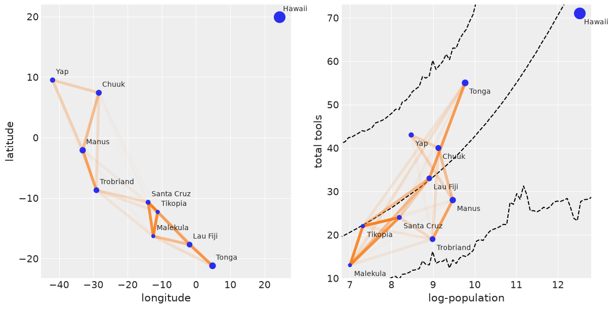
Gaussian process classification#
iris = pd.read_csv('../data/iris.csv')
iris.head()
| sepal_length | sepal_width | petal_length | petal_width | species | |
|---|---|---|---|---|---|
| 0 | 5.1 | 3.5 | 1.4 | 0.2 | setosa |
| 1 | 4.9 | 3.0 | 1.4 | 0.2 | setosa |
| 2 | 4.7 | 3.2 | 1.3 | 0.2 | setosa |
| 3 | 4.6 | 3.1 | 1.5 | 0.2 | setosa |
| 4 | 5.0 | 3.6 | 1.4 | 0.2 | setosa |
df = iris.query("species == ('setosa', 'versicolor')")
y = np.asarray(pd.Categorical(df['species']).codes)
x_1 = df['sepal_length'].values
X_1 = jnp.asarray(x_1[:, None])
def latent_gp_conditional(rng_key, X, f, X_new, ls, eta=1.0, extra_kernel=None,
jitter=1e-6, pred_jitter=1e-4):
"""Posterior of latent f* at X_new given a sampled latent f at X.
f* | f is Gaussian with the standard noise-free GP conditional. extra_kernel,
if given, is a callable (A, B) -> (len(A), len(B)) added to the ExpQuad part
(used for the composite-kernel iris model). pred_jitter keeps the predictive
covariance positive definite on dense grids.
"""
def full_kernel(A, B, include_jitter):
k = expquad(A, B, eta=eta, ls=ls, jitter=jitter, include_jitter=include_jitter)
if extra_kernel is not None:
k = k + extra_kernel(A, B)
return k
m = X_new.shape[0]
K = full_kernel(X, X, include_jitter=True)
K_s = full_kernel(X, X_new, include_jitter=False)
K_ss = full_kernel(X_new, X_new, include_jitter=True)
L = jnp.linalg.cholesky(K)
alpha = jax.scipy.linalg.cho_solve((L, True), f)
mu = K_s.T @ alpha
v = jax.scipy.linalg.solve_triangular(L, K_s, lower=True)
cov = K_ss - v.T @ v
cov = 0.5 * (cov + cov.T) + pred_jitter * jnp.eye(m)
return dist.MultivariateNormal(loc=mu, covariance_matrix=cov).sample(rng_key)
def model_iris(X, y=None):
ls = numpyro.sample("ℓ", dist.Gamma(2, 0.5))
K = expquad(X, X, ls=ls)
f = sample_latent_gp("f", K)
# logistic inverse link via Bernoulli logits
numpyro.sample("y", dist.Bernoulli(logits=f), obs=y)
kernel_iris = NUTS(model_iris, target_accept_prob=0.9)
mcmc_iris = MCMC(
kernel_iris,
num_warmup=1000,
num_samples=1000,
num_chains=1,
chain_method="sequential",
progress_bar=False,
)
mcmc_iris.run(random.PRNGKey(seed), X=X_1, y=jnp.asarray(y))
trace_iris = mcmc_iris.get_samples()
X_new = np.linspace(np.floor(x_1.min()), np.ceil(x_1.max()), 200)[:, None]
X_new_j = jnp.asarray(X_new)
n_pred = 300
ls_draws = trace_iris["ℓ"][:n_pred]
f_draws = trace_iris["f"][:n_pred]
keys = random.split(random.PRNGKey(seed + 2), n_pred)
f_pred = vmap(
lambda k, ls, f: latent_gp_conditional(k, X_1, f, X_new_j, ls)
)(keys, ls_draws, f_draws)
pred_samples = {"f_pred": np.asarray(f_pred)}
def find_midpoint(array1, array2, value):
"""
This should be a proper docstring :-)
"""
array1 = np.asarray(array1)
idx0 = np.argsort(np.abs(array1 - value))[0]
idx1 = idx0 - 1 if array1[idx0] > value else idx0 + 1
if idx1 == len(array1):
idx1 -= 1
return (array2[idx0] + array2[idx1]) / 2
_, ax = plt.subplots(figsize=(10, 6))
fp = logistic(pred_samples['f_pred'])
fp_mean = np.mean(fp, 0)
ax.plot(X_new[:, 0], fp_mean)
# plot the data (with some jitter) and the true latent function
ax.scatter(x_1, np.random.normal(y, 0.02),
marker='.', color=[f'C{xi}' for xi in y])
az.plot_hdi(X_new[:, 0], fp, color='C2', smooth=False, ax=ax)
db = np.array([find_midpoint(fi, X_new[:, 0], 0.5) for fi in fp])
db_mean = db.mean()
db_hdi = az.hdi(db)
ax.vlines(db_mean, 0, 1, color='k')
ax.fill_betweenx([0, 1], db_hdi[0], db_hdi[1], color='k', alpha=0.5)
ax.set_xlabel('sepal_length')
ax.set_ylabel('θ', rotation=0)
plt.savefig('B11197_07_11.png')
FutureWarning: hdi currently interprets 2d data as (draw, shape) but this will change in a future release to (chain, draw) for coherence with other functions
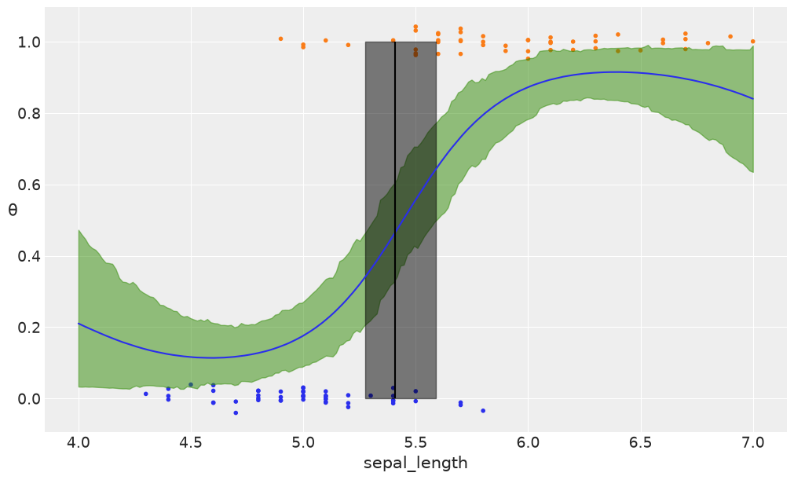
def model_iris2(X, y=None):
ls = numpyro.sample("ℓ", dist.Gamma(2, 0.5))
c = numpyro.sample("c", dist.Normal(x_1.min(), 1.0))
tau = numpyro.sample("τ", dist.HalfNormal(5))
n = X.shape[0]
# composite kernel: ExpQuad + tau * Linear(c) + WhiteNoise
K = (
expquad(X, X, ls=ls, include_jitter=False)
+ tau * linear_kernel(X, X, c=c)
+ 1e-5 * jnp.eye(n)
)
f = sample_latent_gp("f", K)
numpyro.sample("y", dist.Bernoulli(logits=f), obs=y)
kernel_iris2 = NUTS(model_iris2, target_accept_prob=0.9)
mcmc_iris2 = MCMC(
kernel_iris2,
num_warmup=1000,
num_samples=1000,
num_chains=1,
chain_method="sequential",
progress_bar=False,
)
mcmc_iris2.run(random.PRNGKey(seed), X=X_1, y=jnp.asarray(y))
trace_iris2 = mcmc_iris2.get_samples()
n_pred = 300
ls_draws = trace_iris2["ℓ"][:n_pred]
c_draws = trace_iris2["c"][:n_pred]
tau_draws = trace_iris2["τ"][:n_pred]
f_draws = trace_iris2["f"][:n_pred]
keys = random.split(random.PRNGKey(seed + 3), n_pred)
def predict_iris2(k, ls, c, tau, f):
extra = lambda A, B: tau * linear_kernel(A, B, c=c)
return latent_gp_conditional(k, X_1, f, X_new_j, ls, extra_kernel=extra)
f_pred = vmap(predict_iris2)(keys, ls_draws, c_draws, tau_draws, f_draws)
pred_samples = {"f_pred": np.asarray(f_pred)}
_, ax = plt.subplots(figsize=(10,6))
fp = logistic(pred_samples['f_pred'])
fp_mean = np.mean(fp, 0)
ax.scatter(x_1, np.random.normal(y, 0.02), marker='.', color=[f'C{ci}' for ci in y])
db = np.array([find_midpoint(fi, X_new[:,0], 0.5) for fi in fp])
db_mean = db.mean()
db_hdi = az.hdi(db)
ax.vlines(db_mean, 0, 1, color='k')
ax.fill_betweenx([0, 1], db_hdi[0], db_hdi[1], color='k', alpha=0.5)
ax.plot(X_new[:,0], fp_mean, 'C2', lw=3)
az.plot_hdi(X_new[:,0], fp, color='C2', smooth=False, ax=ax)
ax.set_xlabel('sepal_length')
ax.set_ylabel('θ', rotation=0)
plt.savefig('B11197_07_12.png')
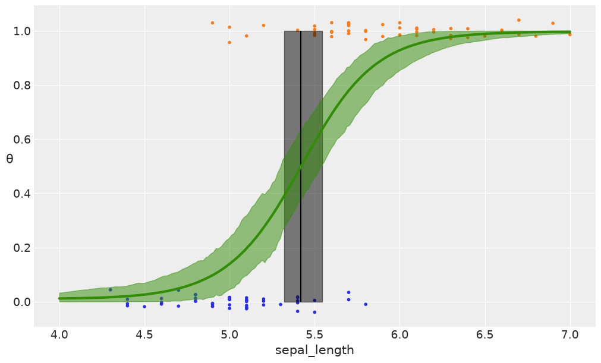
df_sf = pd.read_csv('../data/space_flu.csv')
age = df_sf.age.values[:, None]
space_flu = df_sf.space_flu.values.astype(int)
age_j = jnp.asarray(age.astype(float))
ax = df_sf.plot.scatter('age', 'space_flu', figsize=(8, 5))
ax.set_yticks([0, 1])
ax.set_yticklabels(['healthy', 'sick'])
plt.savefig('B11197_07_13.png', bbox_inches='tight')
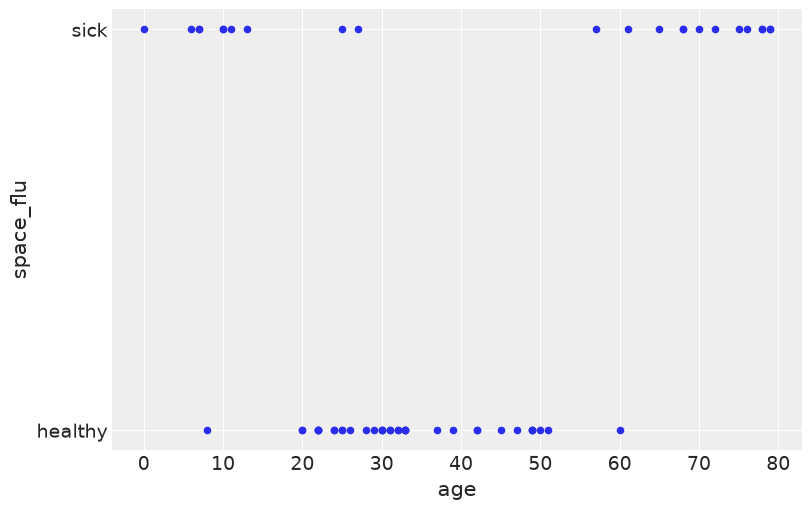
def model_space_flu(X, y=None):
ls = numpyro.sample("ℓ", dist.HalfCauchy(1))
n = X.shape[0]
# ExpQuad + WhiteNoise
K = expquad(X, X, ls=ls, include_jitter=False) + 1e-5 * jnp.eye(n)
f = sample_latent_gp("f", K)
numpyro.sample("y", dist.Bernoulli(logits=f), obs=y)
kernel_space_flu = NUTS(model_space_flu, target_accept_prob=0.9)
mcmc_space_flu = MCMC(
kernel_space_flu,
num_warmup=1000,
num_samples=1000,
num_chains=1,
chain_method="sequential",
progress_bar=False,
)
mcmc_space_flu.run(random.PRNGKey(seed), X=age_j, y=jnp.asarray(space_flu))
trace_space_flu = mcmc_space_flu.get_samples()
X_new = np.linspace(0, 80, 200)[:, None]
X_new_j = jnp.asarray(X_new)
n_pred = 300
ls_draws = trace_space_flu["ℓ"][:n_pred]
f_draws = trace_space_flu["f"][:n_pred]
keys = random.split(random.PRNGKey(seed + 4), n_pred)
f_pred = vmap(
lambda k, ls, f: latent_gp_conditional(k, age_j, f, X_new_j, ls)
)(keys, ls_draws, f_draws)
pred_samples = {"f_pred": np.asarray(f_pred)}
_, ax = plt.subplots(figsize=(10, 6))
fp = logistic(pred_samples['f_pred'])
fp_mean = np.nanmean(fp, 0)
ax.scatter(age, np.random.normal(space_flu, 0.02),
marker='.', color=[f'C{ci}' for ci in space_flu])
ax.plot(X_new[:, 0], fp_mean, 'C2', lw=3)
az.plot_hdi(X_new[:, 0], fp, color='C2', smooth=False, ax=ax)
ax.set_yticks([0, 1])
ax.set_yticklabels(['healthy', 'sick'])
ax.set_xlabel('age')
plt.savefig('B11197_07_14.png')
FutureWarning: hdi currently interprets 2d data as (draw, shape) but this will change in a future release to (chain, draw) for coherence with other functions
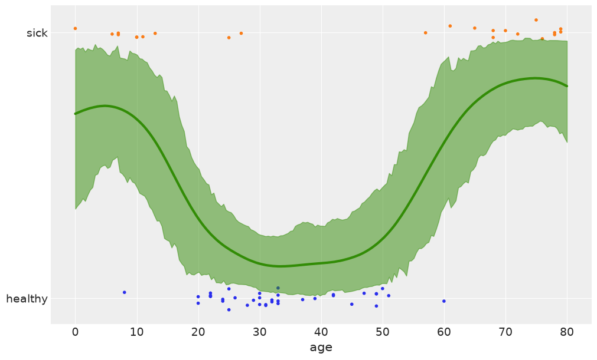
the coal-mining disaster#
coal_df = pd.read_csv('../data/coal.csv', header=None)
coal_df.head()
| 0 | |
|---|---|
| 0 | 1851.2026 |
| 1 | 1851.6324 |
| 2 | 1851.9692 |
| 3 | 1851.9747 |
| 4 | 1852.3142 |
# discretize data
years = int(coal_df.max().values[0] - coal_df.min().values[0])
bins = years // 4
hist, x_edges = np.histogram(coal_df, bins=bins)
# compute the location of the centers of the discretized data
x_centers = x_edges[:-1] + (x_edges[1] - x_edges[0]) / 2
# arrange xdata into proper shape for GP
x_data = x_centers[:, None]
# use integer per-bin counts as observations; exp(f) is the per-year rate
y_data = hist
x_data_j = jnp.asarray(x_data)
y_data_j = jnp.asarray(y_data.astype(int))
def model_coal(X, y=None):
ls = numpyro.sample("ℓ", dist.HalfNormal(X.std()))
n = X.shape[0]
# ExpQuad + WhiteNoise
K = expquad(X, X, ls=ls, include_jitter=False) + 1e-5 * jnp.eye(n)
f = sample_latent_gp("f", K)
# exp(f) is the per-year rate; 4 * exp(f) is the expected count per 4-year bin.
# obs must be integer counts (y_data_j has dtype int).
numpyro.sample("y_pred", dist.Poisson(4.0 * jnp.exp(f)), obs=y)
kernel_coal = NUTS(model_coal, target_accept_prob=0.9)
mcmc_coal = MCMC(
kernel_coal,
num_warmup=1000,
num_samples=1000,
num_chains=1,
chain_method="sequential",
progress_bar=False,
)
mcmc_coal.run(random.PRNGKey(seed), X=x_data_j, y=y_data_j)
trace_coal = mcmc_coal.get_samples()
_, ax = plt.subplots(figsize=(10, 6))
f_trace = np.exp(np.asarray(trace_coal['f']))
rate_median = np.median(f_trace, axis=0)
ax.plot(x_centers, rate_median, 'w', lw=3)
az.plot_hdi(x_centers, f_trace, smooth=False, ax=ax)
az.plot_hdi(x_centers, f_trace, hdi_prob=0.5, smooth=False,
plot_kwargs={'alpha': 0}, ax=ax)
ax.plot(coal_df, np.zeros_like(coal_df)-0.5, 'k|')
ax.set_xlabel('years')
ax.set_ylabel('rate')
plt.savefig('B11197_07_15.png')
FutureWarning: hdi currently interprets 2d data as (draw, shape) but this will change in a future release to (chain, draw) for coherence with other functions
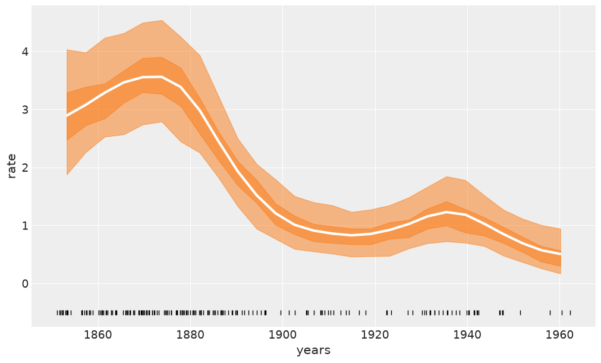
the redwood data#
rw_df = pd.read_csv('../data/redwood.csv', header=None)
_, ax = plt.subplots(figsize=(8, 8))
ax.plot(rw_df[0], rw_df[1], 'C0.')
ax.set_xlabel('x1 coordinate')
ax.set_ylabel('x2 coordinate')
plt.savefig('B11197_07_16.png')
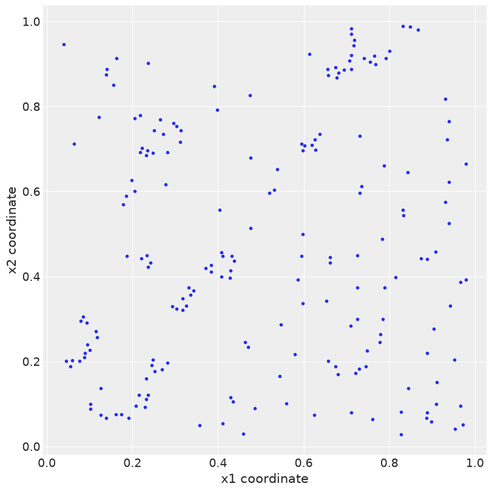
# discretize spatial data
bins = 20
hist, x1_edges, x2_edges = np.histogram2d(
rw_df[1].values, rw_df[0].values, bins=bins)
# compute the location of the centers of the discretized data
x1_centers = x1_edges[:-1] + (x1_edges[1] - x1_edges[0]) / 2
x2_centers = x2_edges[:-1] + (x2_edges[1] - x2_edges[0]) / 2
# arrange ydata into proper shape for GP
y_data = hist.flatten()
# 1-D centre arrays passed directly to model_rw via jnp.kron
X1c = jnp.asarray(x1_centers)
X2c = jnp.asarray(x2_centers)
y_data_j = jnp.asarray(y_data.astype(float))
rw_std = jnp.asarray(rw_df.std().values)
def model_rw(X1c, X2c, y=None):
ls = numpyro.sample("ℓ", dist.HalfNormal(rw_std).to_event(1))
# Kronecker product of two 1-D ExpQuad kernels over each axis (LatentKron)
K1 = expquad(X1c, X1c, ls=ls[0], include_jitter=False)
K2 = expquad(X2c, X2c, ls=ls[1], include_jitter=False)
n = K1.shape[0] * K2.shape[0]
K = jnp.kron(K1, K2) + 1e-5 * jnp.eye(n)
f = sample_latent_gp("f", K)
numpyro.sample("y", dist.Poisson(jnp.exp(f)), obs=y)
kernel_rw = NUTS(model_rw, target_accept_prob=0.9)
mcmc_rw = MCMC(
kernel_rw,
num_warmup=500,
num_samples=500,
num_chains=1,
chain_method="sequential",
progress_bar=False,
)
mcmc_rw.run(random.PRNGKey(seed), X1c=X1c, X2c=X2c, y=y_data_j)
trace_rw = mcmc_rw.get_samples()
az.summary(az.from_numpyro(mcmc_rw), var_names=['ℓ'])
arviz - WARNING - Shape validation failed: input_shape: (1, 500), minimum_shape: (chains=2, draws=4)
| mean | sd | hdi_3% | hdi_97% | mcse_mean | mcse_sd | ess_bulk | ess_tail | r_hat | |
|---|---|---|---|---|---|---|---|---|---|
| ℓ[0] | 0.157 | 0.089 | 0.069 | 0.352 | 0.032 | 0.039 | 11.0 | 19.0 | NaN |
| ℓ[1] | 0.096 | 0.024 | 0.062 | 0.144 | 0.004 | 0.003 | 45.0 | 83.0 | NaN |
rate = np.exp(np.mean(np.asarray(trace_rw['f']), axis=0).reshape((bins, -1)))
fig, ax = plt.subplots(figsize=(6, 6))
ims = ax.imshow(rate, origin='lower')
ax.grid(False)
ticks_loc = np.linspace(0, bins-1, 6)
ticks_lab = np.linspace(0, 1, 6).round(1)
ax.set_xticks(ticks_loc)
ax.set_yticks(ticks_loc)
ax.set_xticklabels(ticks_lab)
ax.set_yticklabels(ticks_lab)
cbar = fig.colorbar(ims, fraction=0.046, pad=0.04)
plt.savefig('B11197_07_17.png')
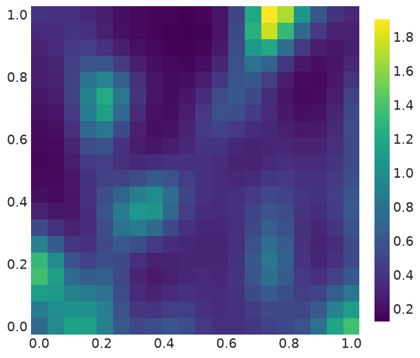